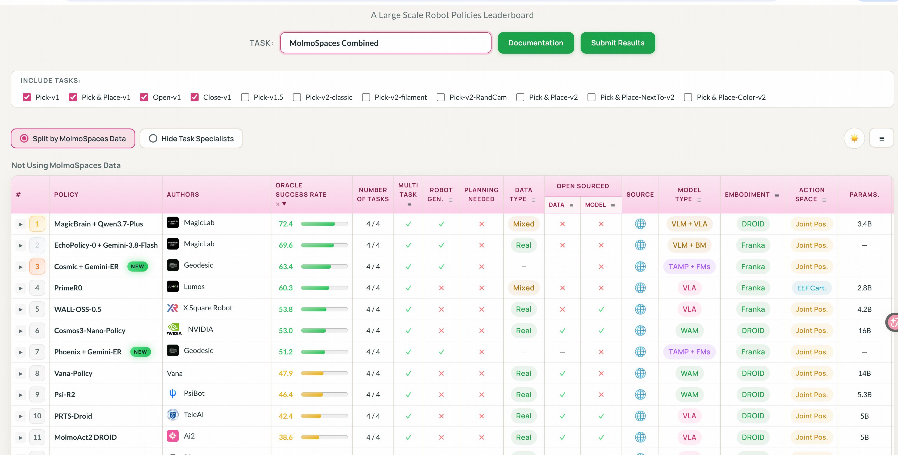
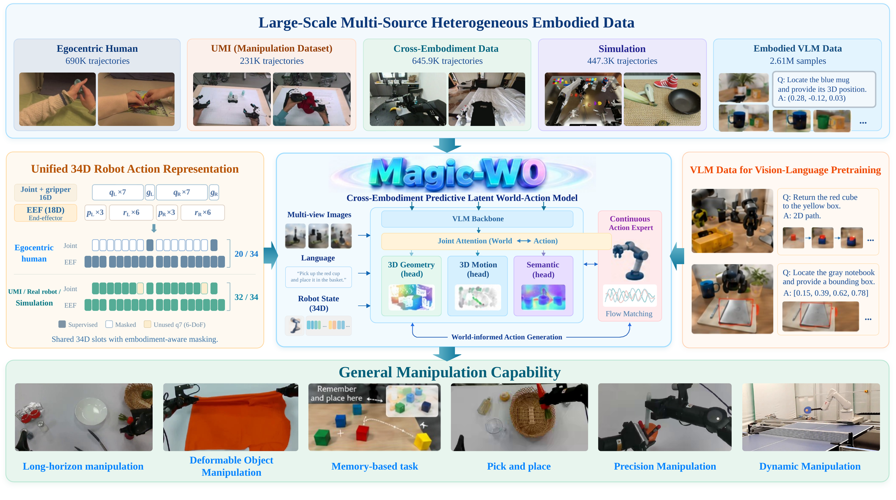
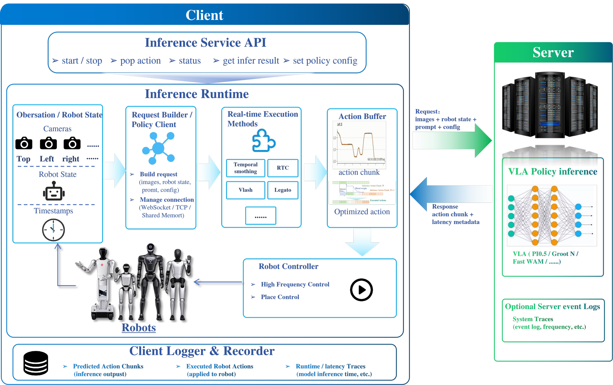
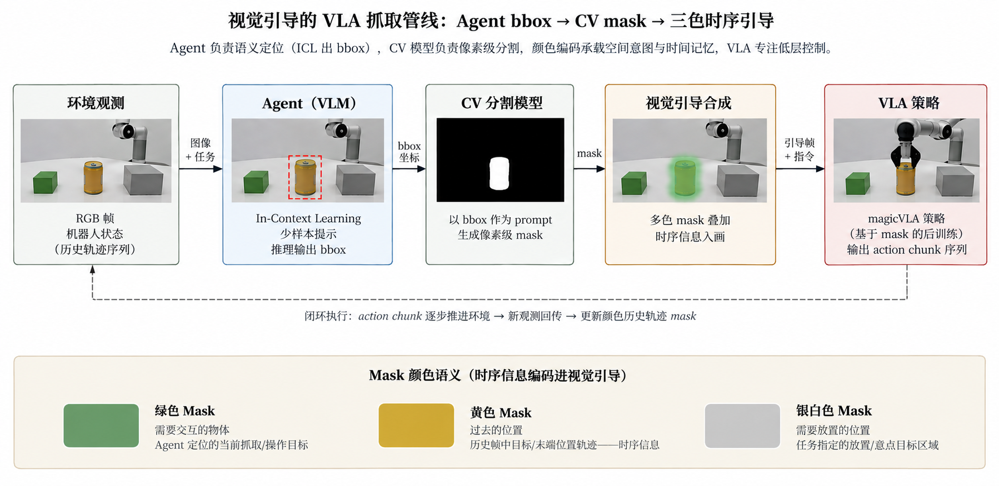
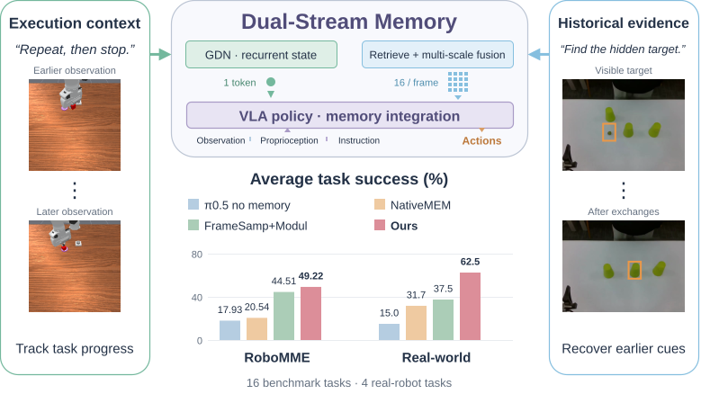
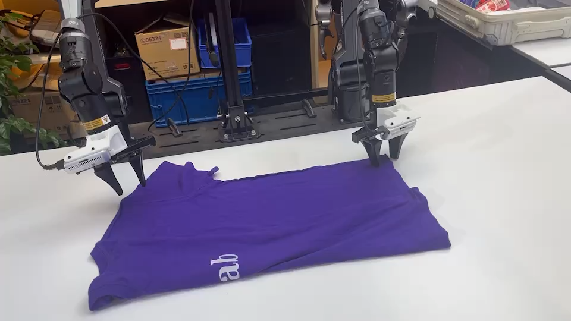
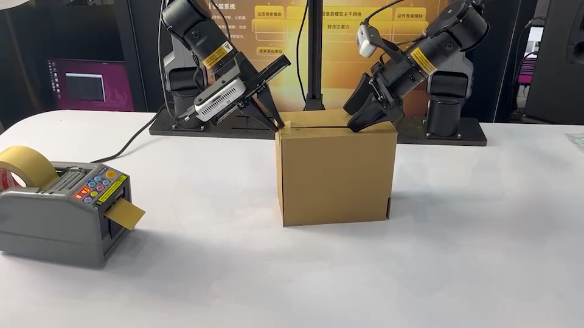
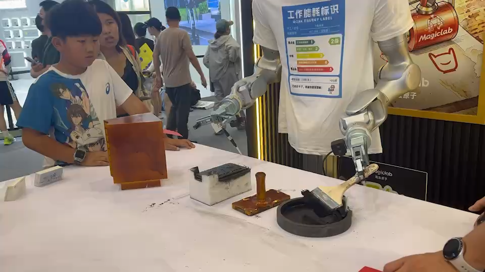

浙江大学博士
以系统化科研训练建立视觉与智能算法基础。
PROFILE · 关于
博士毕业于浙江大学，先后在阿里巴巴、蔚来汽车从事视觉算法研发与自动驾驶工作。2016 年 1 月加入魔法原子，现任具身模型负责人、算法 VP。
负责公司具身智能大模型研发及相关技术体系建设，覆盖数据、平台、模型、评测和部署，持续推动机器人智能系统能力升级。
以系统化科研训练建立视觉与智能算法基础。
参与产业级视觉算法研发，积累算法工程化与规模化落地经验。
面向复杂真实环境开展感知与自动驾驶技术研发。
统筹具身大模型研发、技术体系建设与近 60 人团队协同。
学术服务与人才认可
杭州市高层次人才 · 上海市高层次人才
行业交流
受邀发表主旨演讲与直播分享，并接受粉丝近千万的头部具身智能媒体个人专访，持续推动技术路线与产业认知升级。
SYSTEM · 能力体系
从组织与基础设施出发，打通数据生产、模型研发、评测部署和真实业务交付。
TEAM & ORGANIZATION
从 0 到 1 搭建近 60 人 团队，形成跨平台、数据、模型、部署和评测的协同机制。
DATA & INFRASTRUCTURE
建设数据、算力、遥操和数采平台，让高质量机器人数据能够持续生产、治理和回流。
MODELS & DELIVERY
围绕世界模型与 VLA+WM 形成模型研发主线，并把强化学习、记忆、后训练和推理优化带入完整交付链路。
DATA FLYWHEEL
产生真实结果
结果与 Episode
筛选有效样本
自动化质量门禁
构建训练数据集
验证能力提升
进入下一轮执行
IMPACT & WORK · 成果与代表工作
从榜单、真机，到开源项目与完整技术方案，集中呈现可验证的研究与产业成果。
RoboDojo-Sim 榜单
MolmoSpaces 榜单

查看完整榜单真机任务成功率
OPEN SOURCE & BENCHMARKS
发布 Magic-W0、Toward Real-Time VLAs 等工作，并在 RoboDojo、MolmoSpaces 等具身模型榜单取得 Top 1。
REAL-WORLD DELIVERY
整套能力支持上交会、WAIC、WRC、IFA、外滩大会等重要活动展示，并形成近千万元外售订单，验证技术系统的可交付性。
SELECTED WORK




MEMORY FOR VLA · ICRA 2027 UNDER REVIEW
以时序记忆追踪执行状态，以空间检索找回历史视觉证据，让 VLA 处理依赖历史的操作任务。
PUBLICATIONS · 论文
* 表示通讯作者&项目负责人；Under Review 状态按 2026 年 10 月材料整理。
TECHNICAL REPORT
Xuhua Chen, Zhenhan Yin, Yuan Zhang, Tao Zhang*, et al.
TECHNICAL REPORT
Di Wu, Rongtian Shen, Ping Liu, Yan Shen, Zhenhan Yin, Shun Zuo, Xuhua Chen, He Zheng, Lingfeng Zhang, Jianglin Zhang, Tao Zhang*
ICRA 2027 · UNDER REVIEW
Cui Miao, Junhao Yu, Ping Liu, Ning Yang, Xuhua Chen, He Zheng, Xiaodong Wang, Tao Zhang*
ICRA 2027 · UNDER REVIEW
Di Wu, Ping Liu, Xuhua Chen, He Zheng, Lingfeng Zhang, Rongtian Shen, Tao Zhang*
ICRA 2027 · UNDER REVIEW
Di Wu, Rongtian Shen, Ping Liu, Xuhua Chen, He Zheng, Lingfeng Zhang, Tao Zhang*
ICRA 2027 · UNDER REVIEW
Yang Wang, Ping Liu, Ruiyu Wang, Xuhua Chen, Lingfeng Zhang, Tao Zhang*, Jiangning Zhang
ICRA 2027 · UNDER REVIEW
Shijun Shi*, Zhe Liu, Zhi Hou, Yinan Chen, Tao Zhang, Kai Hu, Yong Liu, Jiangning Zhang
ICLR 2027 · UNDER REVIEW
Jingkun Yi, Shujie Zhang, Zirui Zhou, Haoxiao Wang, Haiyang Sun, Yuhang Dong, Xudong Xu, Xing Shen, Tao Zhang, Yong Liu, Jiangning Zhang
ICLR 2027 · UNDER REVIEW
Yicheng Xu, Zhikai Xu, Ziyuan Chen, Yuhang Dong, Tao Zhang, Zhucun Xue, Yong Liu, Jiangning Zhang
AAAI 2027 · UNDER REVIEW
Qiuting Yu, Miao Pan, Jiarun Li, Kaili Liu, Sicheng He, Tao Zhang, Jintao Chen, Yongliang Shen, Xuhong Zhang, Wenqi Zhang
AAAI 2027 · UNDER REVIEW
Bo-Cheng Hu, Xinyuan Liu, Kewei Wei, Tao Zhang, Yue Zhao, Lingfeng Zhang, Hongwei Wang, Gaoang Wang
DEMOS · 演示
代表性真机演示与 WAIC、WRC、IFA 等展演。

01 · REAL ROBOT效果不同颜色、尺寸衣物成功率 100%，较 SOTA 开源模型 KAI0 提升 16.67%；平均执行 59.59 秒，缩短 17 秒。
参展Zero-shot 部署，亮相上交会、WAIC、WRC、IFA；获多家媒体及 VIP 参观团关注，相关微信公众号视频获 2k+ 点赞。

02 · REAL ROBOT效果折叠纸盒与粘贴短胶带整体成功率 95.5%，成功案例执行约 45 秒；纸盒被推倒或移动后仍可恢复并继续作业。
参展亮相上交会、WAIC、WRC、IFA，获媒体、VIP 参观团及专业人士现场肯定。

03 · REAL ROBOT效果使用自采数据训练的模型，成功率 93.3%，平均执行约 40 秒；流畅完成蘸墨至拓印全过程，并适应初始位置变化与光照干扰。
参展于 WRC 完成现场展出。
CONTACT · 合作交流